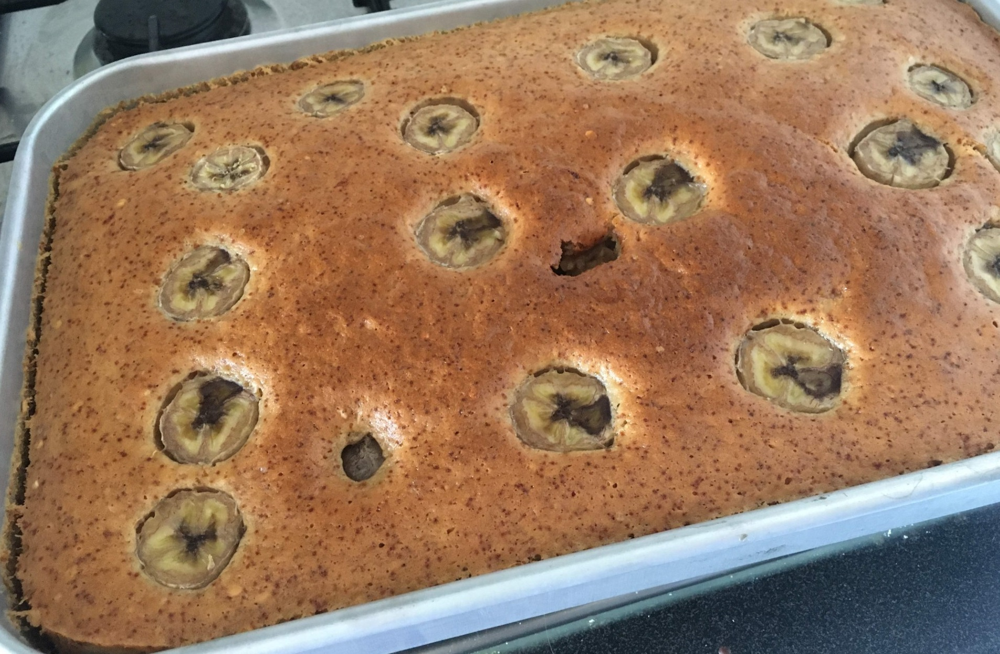

Bolo de banana saudável

Ingredientes
- 1/2 xícara de óleo de coco
- 3 bananas maduras com casca (retirar o talo)
- 4 ovos
- 1 xícara (chá) de açúcar demerara
- 1 xícara (chá) de farinha de trigo integral
- 1 1/2 xícara (chá) de farinha de trigo
- 1 colher (sopa) de fermento químico
Modo de preparo
- Bater no liquidificador o óleo de coco, a banana e o ovo.
- Adicionar o açúcar e bater mais um pouco.
- Passar a mistura para um bowl e adicionar as farinhas e o fermento, misturando até ficar homogêneo.
- Assar a 180º C por 40 minutos.
Observação
Após despejar na fôrma, pode-se salpicar aveia em flocos e canela ou dispor rodelas de banana e então levar para assar.